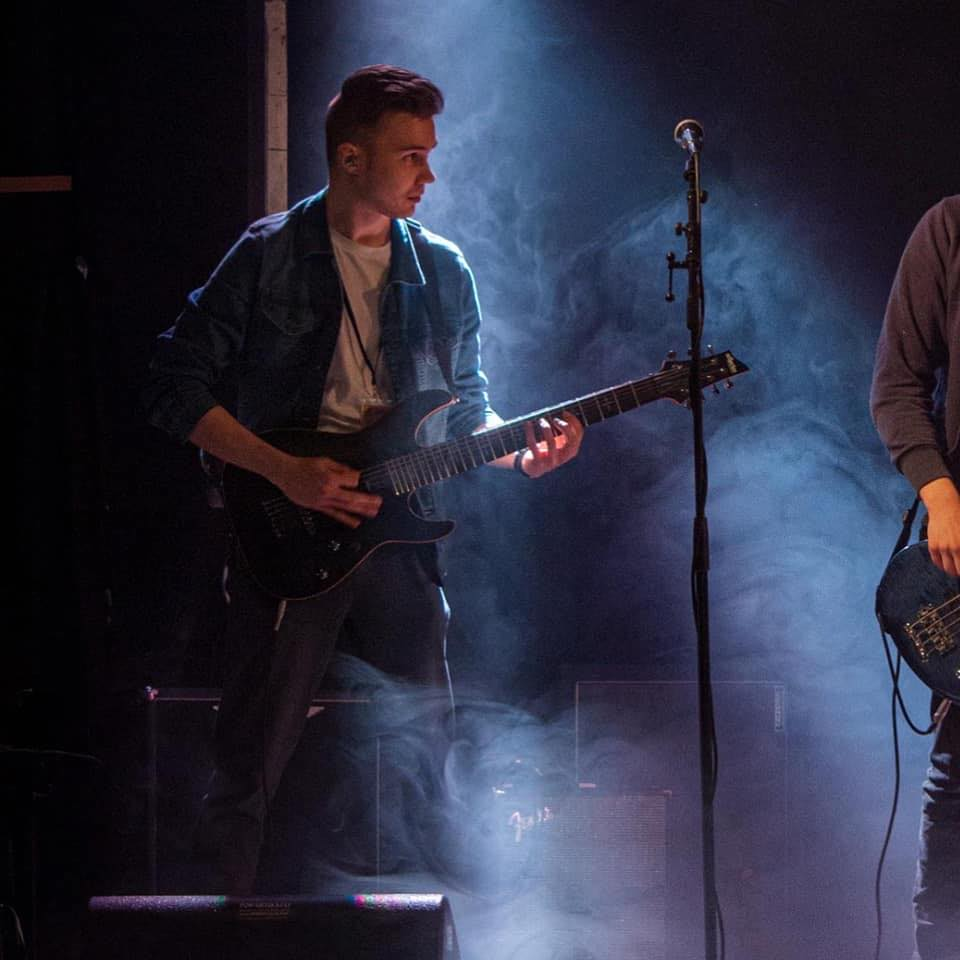

Lisätietoja:
Harrastukset:

- Musiikki
- Nettipokeri
- Urheilu
Historia musiikin kanssa
- Sain ensimmäiset muoviset rummut 3-vuotiaana (2000).
- Ensimmäiset oikeat rummut sain 7-vuotiaana (2004).
- Aloin soittamaan myös sähkökitaraa, viulua ja pianoa.
- Ensimmäinen bändi perustettiin 8-vuotiaana (2005).
- Ensimmäinen oikea keikka 10-vuotiaana (LuoMusa-tapahtuma Hakojärvellä, 2007)
- Bändi hajosi n. 14-vuotiaana laulajan muutettua Kuopioon (2011)
- Kehitin soittotaitojani lähinnä yksin muutaman vuoden
- 21-vuotiaana perustin toisen nykyisistä yhtyeistäni (2018)